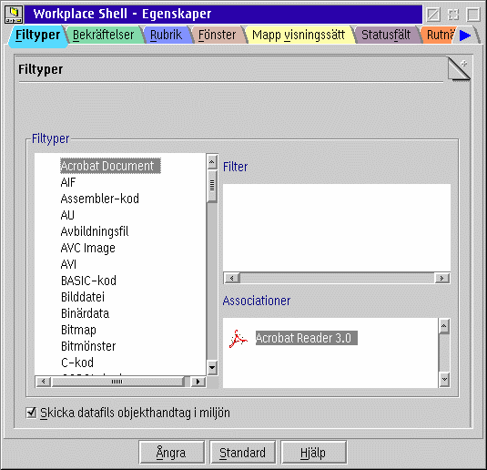

Som du troligtvis redan vet, associerar som standard WPS program till datafiler anv„ndande tv† mekanismer: "associationer med filtyp" och "associationer med filfilter".
Om &xwp;'s ut”kade filassociationer „r aktiverad, kan du endast ha associeringar med filtyp.
Emellertid, eftersom de flesta filer inte har n†gon direkt filtyp satt (vilket kan g”ras p† sidan "Typ" i en fils notbok med inst„llningar), kommer &xwp; automatiskt att tilldela filtyper till filobjektet i enlighet med filfiltren. P† det s„ttet f†r du det b„sta fr†n tv† v„rldar (filtyper och filfilter) p† ett mera logiskt s„tt.
Och vad „r det bra f”r?
F”r det f”rsta, jag har funnit att WPS associationsmekanism „r n†got klumpig om associationer „r adderade till b†de filfilter och filtyper. Det nya s„ttet „r mera logiskt i den avseendet.
F”r den andra, och viktigaste, &xwp; till†ter dig att definiera filtypshierarkier. Till exempel, det finns m†nga filtyper som „r "rena text" filer ocks† (till exempel, "C Kod" eller "HTML" filer), s† den editor som kan l„sa "rena text" filer b”r ocks† kunna l„sa dessa filtyper.
Tills nu, har du varit tvungen att associera samma editor till all dessa filtyper. Med &xwp;, kan du nu definiera vilken typ som helst att bli en "sub-typ" av "ren text", och att den sub-typen kommer att „rva associationerna som „r definierade f”r den ”verordnade typen.
Detta kan g”ras p† den nya sidan med "Filtyper" i "Workplace Shell" objektet (om ut”kade associationer har aktiverats):

F”r att definiera filtypshierarkier, drag och sl„pp helt enkelt filtyperna i "Filtyps" tr„det
p† en annan filtyp.
&xwp; till†ter dig att importera dina gamla filfilter till de nya associationerna.
F”r att g”ra det, h”gerklicka p† f„ltet "Filter" och v„lj "Import".